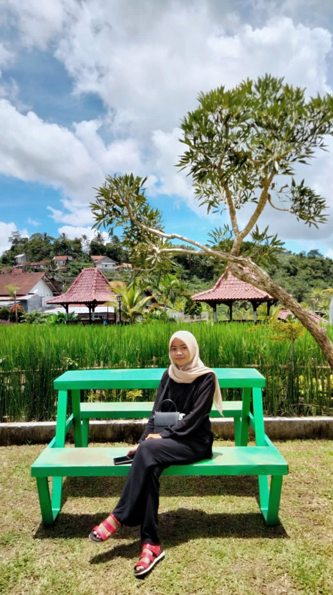

Portofolio
Fitri Setiowati
Saya tinggal di Desa Sidamulya Rt 05/Rw 03, Kecamatan Margasari, Kabupaten Tegal Saya Kuliah di Universitas Peradaban Bumiayu Jurusan Informatika,Semester 6, Kegiatan saya dirumah adalah mencuci baju,membantu ibu memasak,membantu ibu menjemur padi dan menonton drakor.
BIODATA
- Posisi yang diusulkan : Tenaga Ahli Sistem Informasi Geografis
- Nama Perusahaan : PT. Patita Galx
- Nama Personil : Fitri Setiowati, ST, M.Kom
- Tempat/Tanggal Lahir : Tegal,16 Desember 2001
- Pendidikan :
- MI NU 01 Prupuk Selatan 2014
- Smp N3 Margasari 2017
- Sma N1 Margasari 2020
- Sarjana S1 Teknik Informatika, Universitas Peradaban Bumiayu, 2024
- Pendidikan Non formal :
- Kursus : server-side Web GIS Application with leaflet and PostGIS Online
- Kursus : Microsoft Power BI Desktop for Business Intelegence
- Kursus : SQL for Data Analysis and Data Science in 2021
- Diklat : Pelatihan Penyusunan Bencana Detail Tata Ruang Tingkat Dasar metode E-Learning,tahun 2020
- Penguasaan Bahasa
- Bahasa Indonesia :Baik
- Bahasa Inggris : Baik
- Bahasa setempat : Baik
Foto

Lokasi Saya
Google map link